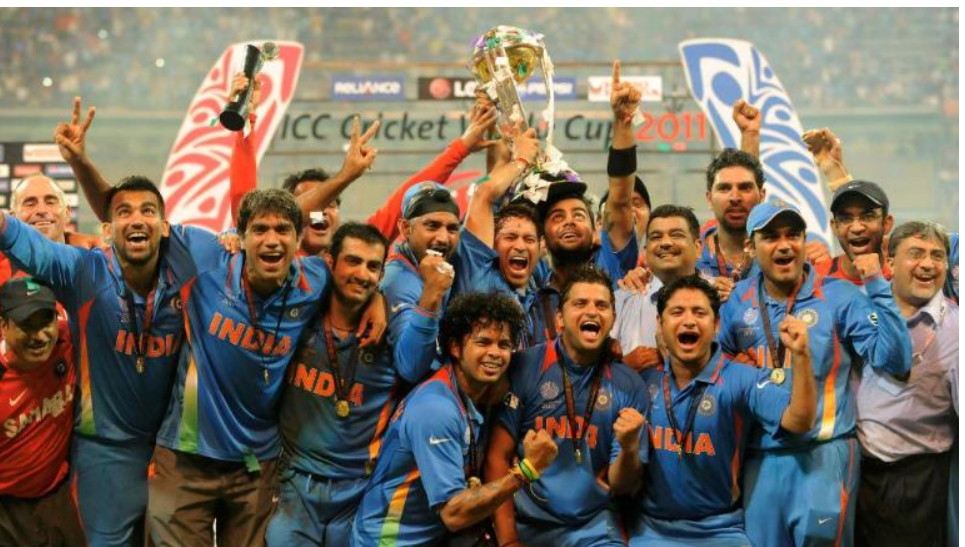

INDIA CRICKET TEAM
The India men's national cricket team, also known as Team India[8] and Men in Blue,[9] is governed by the Board of Control for Cricket in India (BCCI), and is a Full Member of the International Cricket Council (ICC) with Test, One-Day International (ODI) and Twenty20 International (T20I) status.
The Indian cricket team are two times World Champions. In addition to winning the 1983 Cricket World Cup, they triumphed over Sri Lanka in the 2011 Cricket World Cup on home soil- "A remarkable achievement". They were also runners-up at the 2003 Cricket World Cup, and semifinalists four times(1987, 1996, 2015, 2019). They came last in the Super Six stage in the 1999 Cricket World Cup and have been knocked out 4 times in the Group stage (1975, 1979, 1992 and 2007). India's historical win-loss record at the cricket world cup is 46-27, with 1 match being tied and another one being abandoned due to rain.
India's 1983 World Cup victory was a major turning point for Indian as well as world cricket. The win boosted the popularity of cricket in India, which was until then restricted to the urban areas. It also increased the popularity of one-day cricket in India as well as in general. India began to take ODI cricket seriously after the World Cup win and soon emerged as one of the best teams in ODI cricket. Indian corporates too started to take an interest in cricket and began to sponsor many international tournaments, marking the start of the rise of India as the leading financial power in cricket.